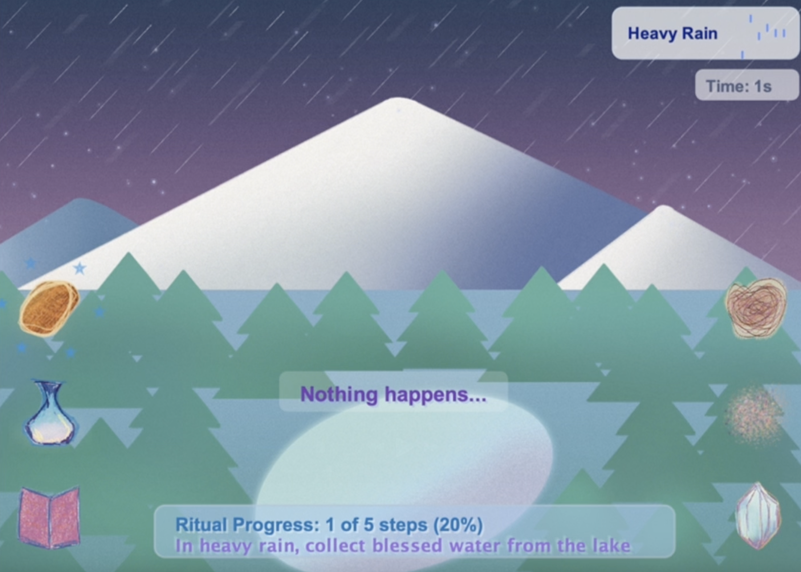

Cyan He
UI/UX
DESIGNER
Strategizing digital ecosystems through the lens of aesthetic precision and human-centric logic.


01 / INTERACTION
The Snow Mountain
A ritual sequence exploring hand-drawn art and interaction logic.
VIEW PROJECT